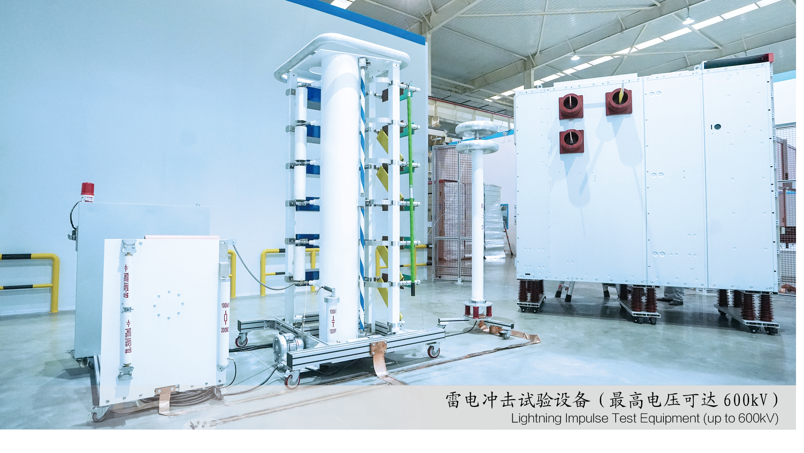

Testing and verification
Test equipment for transformer verification.
Dedicated test facilities support routine testing, agreed FAT and engineering review.
- Lightning impulse
- 2,400kV
- Power-frequency
- 300kV
- Partial discharge
- 8channels
Test capability
Tianyu's published factory material shows a large transformer test station, lightning-impulse test equipment and a dedicated generator set, alongside switchgear test facilities. The exact test program is defined by product, applicable standard and project specification.
Process equipment
Manufacturing assets include large oil-transformer winding equipment, automatic core cutting, welding robots, dry-type casting lines and digital production-management systems.
Equipment and records behind verification.
Test scope is defined by the applicable standard and project specification.

Confirm the test program for your order.
Routine, type and witness tests are agreed against the project specification before production.